Turn-based 4X strategy for Android
One world, many nations, your history.
A deep turn-based strategy game in the grand tradition of the genre, crafted for phones and tablets. Lead a nation from its first settlement to the Information Era, and decide how its story is told.
Join the betaAndroid phones and tablets · Free to try · No ads
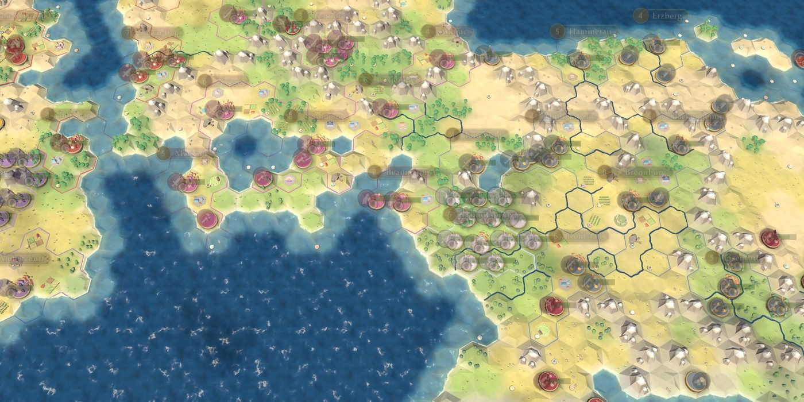
Explore
Every campaign begins on a freshly generated world of continents and islands, rivers, mountain ranges and coastlines, rich in resources and dotted with independent Free Cities. Send scouts into the unknown, chart the land and claim the places that will make your nation great.
No two maps, and no two histories, are ever alike.
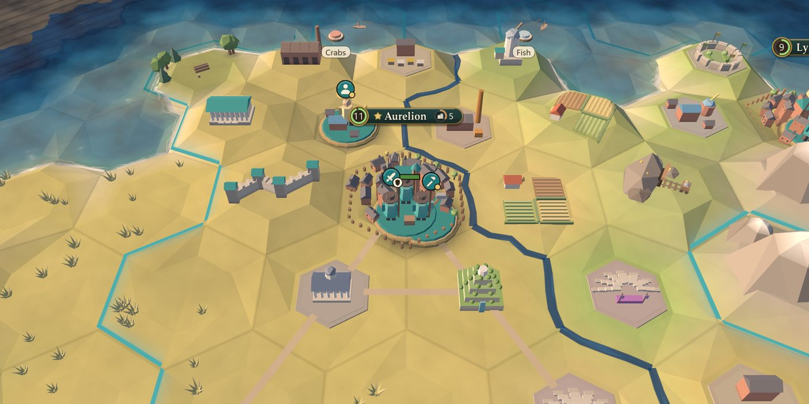
Expand
Found cities and watch them rise from a handful of huts into great capitals. Work the land tile by tile, place districts where their neighbours make them strongest, raise walls, and crown your empire with wonders that only one nation in the world can ever build.
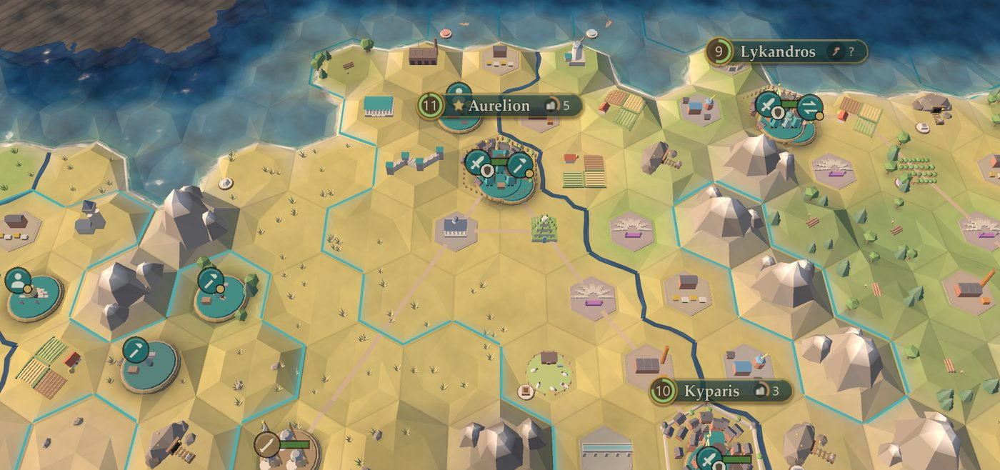
Exploit
Advance through eight eras of technologies and civics, from the first fire to the information age. Adopt governments and fit policy cards to your plans, found a religion and carry it across the world, and recruit great people whose talents change the course of history.
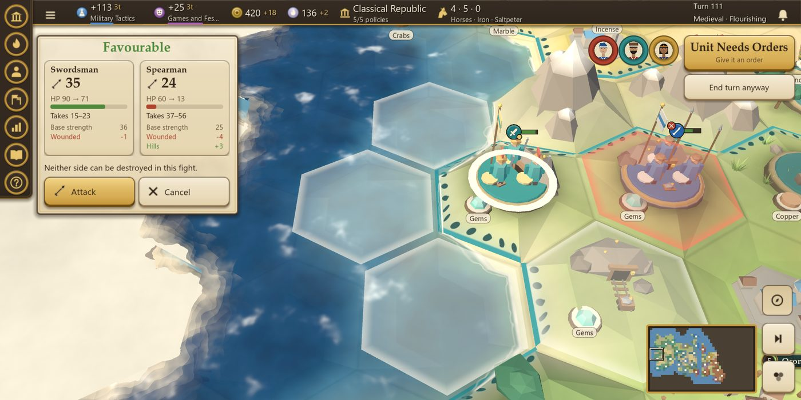
Exterminate
Turn-based tactical combat rewards preparation. Terrain, flanking, support, fortification and siege all count, and every attack shows its likely outcome before you commit.
Raise armies and fleets, clear raider camps and storm fortified cities, or hold the line until the moment is right.
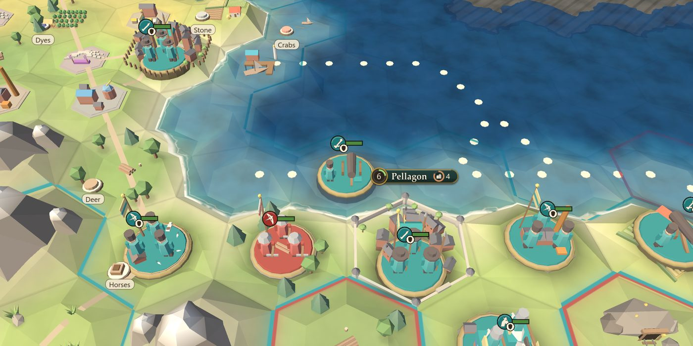
Diplomacy
Send traders along roads and sea lanes, court the Free Cities with emissaries, negotiate deals and alliances, or denounce a rival before the world. Every nation remembers how you treated it, and every choice has a price.
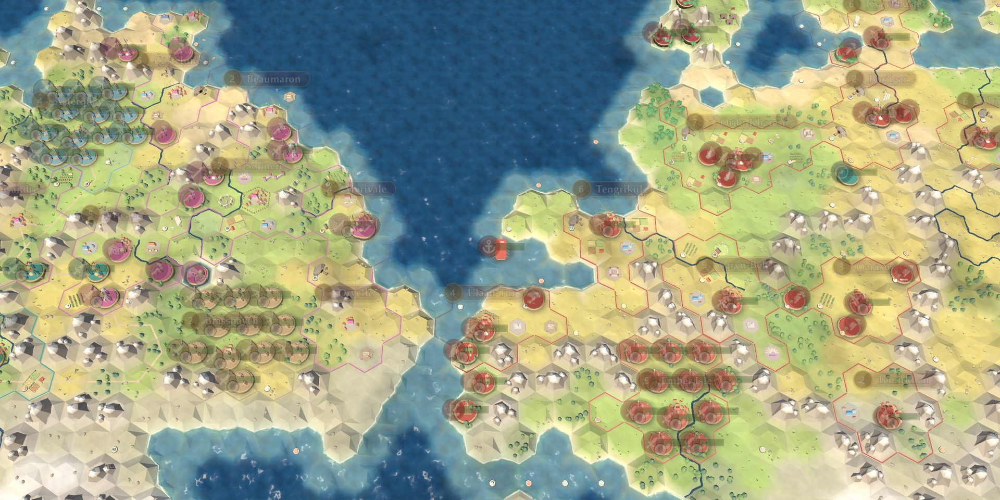
Rivals
Most strategy games make their hardest opponents stronger by handing them bonuses. Atlas of Ages makes them smarter. Its computer rivals are developed the way chess engines are: every idea has to prove, over hundreds of full games against the version before it, that it really plays better.
On the first four tiers rivals get no bonuses of any kind. Each tier simply plays better: it commits to a victory plan, reads what its rivals are aiming for, runs several campaigns at once and times its diplomacy to its wars.
Rivals know only what you could know: the land they have explored, the units in their sight, what they remember and what the world has made public. Automated checks change hidden parts of a game and confirm that no rival decision changes with them.
From Iron Crown up, rivals search their battles before they fight. They weigh hundreds of joint moves along a front, expect your counterattack and, at the top, coordinate their replies and follow-up attacks across the whole front.
Rivals keep their alliances, even when an ally edges towards victory. And they think while their moves play out in front of you, so even the hardest tier never freezes your game.
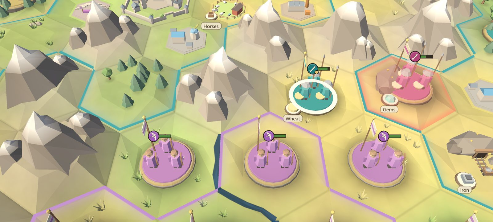
How the rivals were built
Seven research studies into how strong players beat computer opponents, how competitive matches open and wage war, and which methods from game-AI research truly hold up. The result: a ranked playbook of fifteen expert strategies.
Seven scripted sparring partners, each playing one expert strategy without mercy: the early rush, the turtle trap, raids, extortion, forward settling, the timing push and naval raids.
An overnight tournament rig plays complete 200-turn games, AI against AI, rotating every seat over every start. In a single night it played 468 of them.
A new idea must win on one set of maps, then win again on fresh maps it has never seen, under a sequential statistical test, without slowing the game down. Only then does it ship.
One change looked like a clear win on its first 24 maps, then gave nothing at all on maps it had never seen. It never shipped. That is the point of the test.
Seven tiers
The top three tiers unlock as you win: beat a tier to open the next.
Dawn breaks over your cities, dusk paints the land gold and moonlit nights give way to a new morning. Weather fronts drift across fields and forests, and rain rolls in over the land.
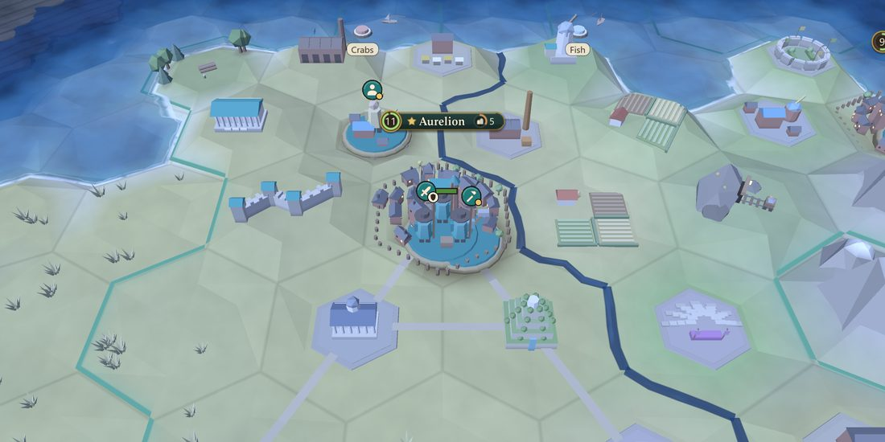
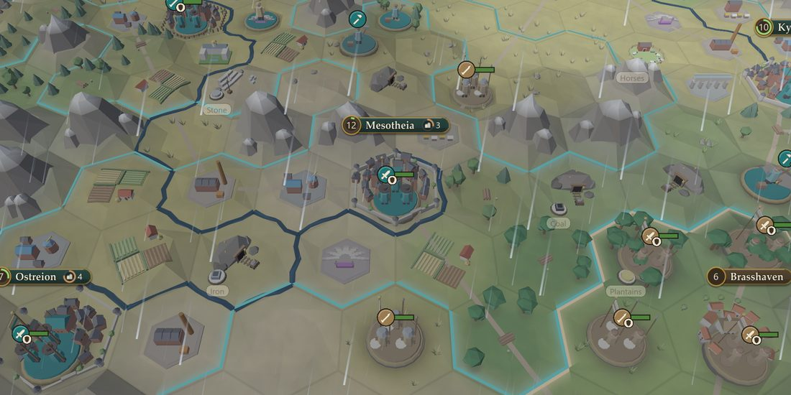
Every nation brings its own leader, abilities, unique unit and unique construction.
Six world types, from a single great Pangaea to scattered Archipelagos, and three map sizes give every campaign its own shape.
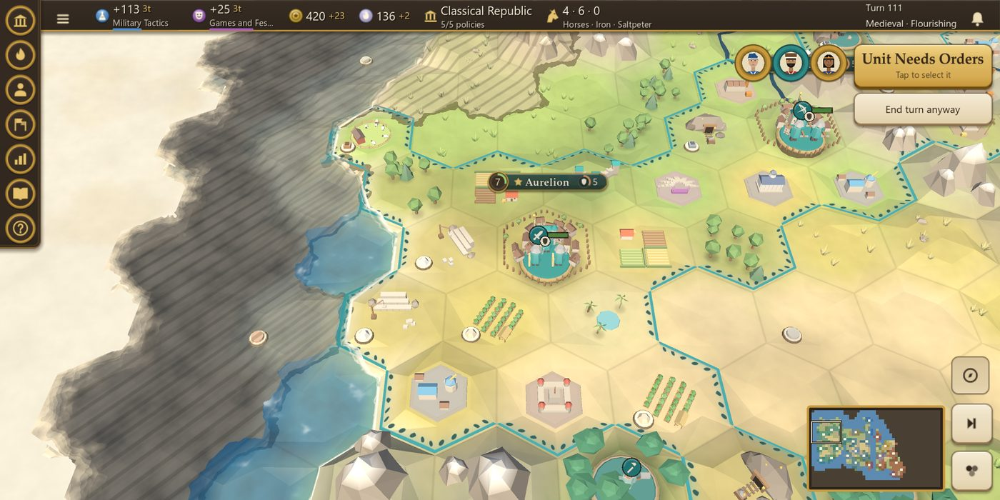
Made for touch
Atlas of Ages was designed for touch from the very first line. Every system sits a single tap away, every move is previewed before you confirm it, and a long press explains anything on the map. Lenses reveal yields and the best places to settle.
A six-chapter tutorial teaches each rule with the game's real numbers as you play.
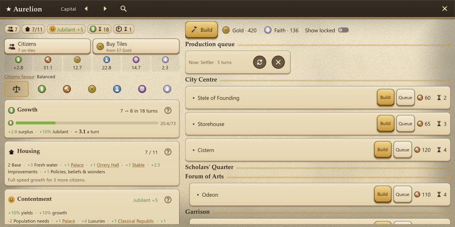
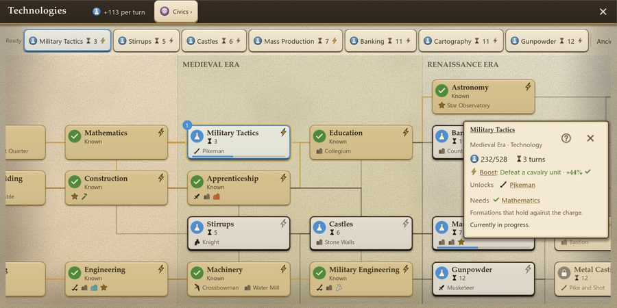
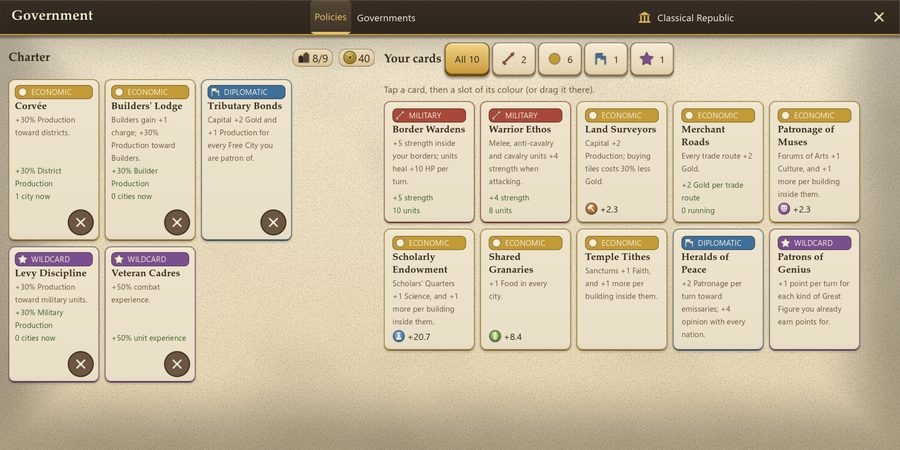
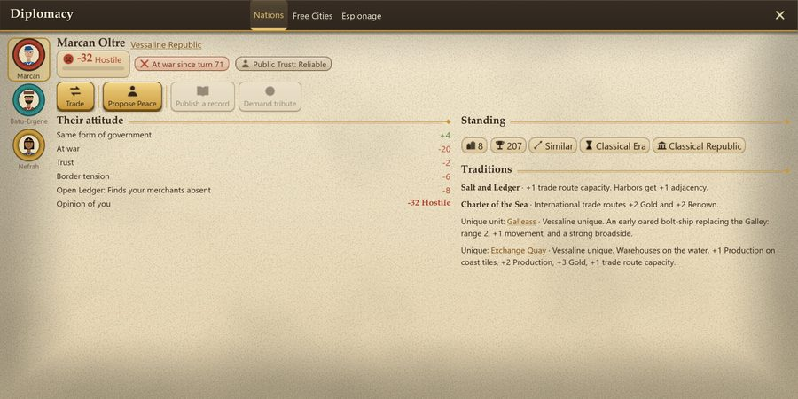
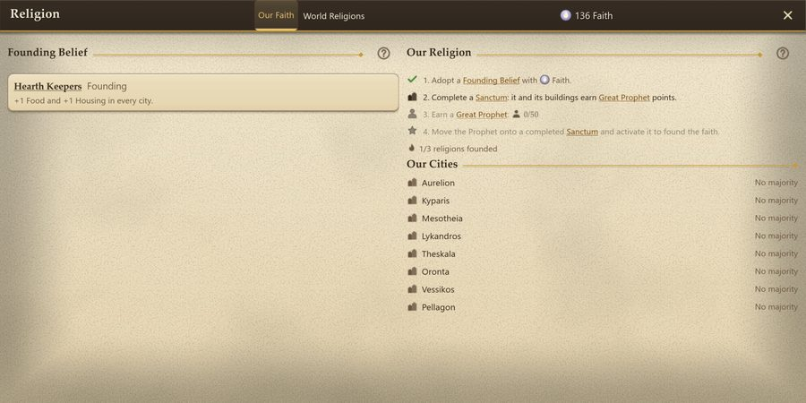
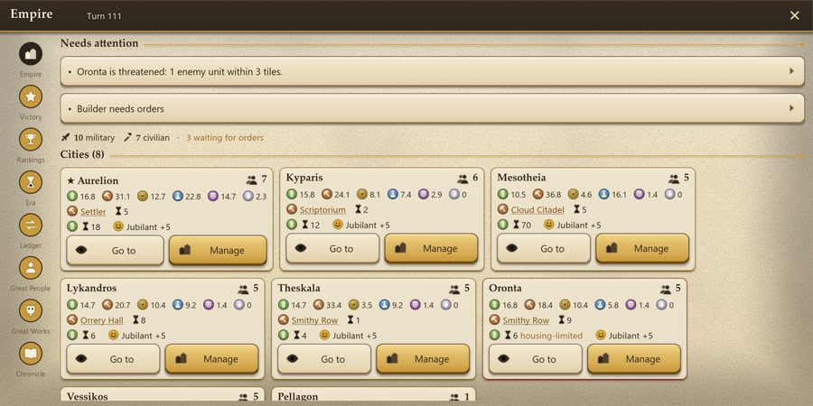
No ads. No subscriptions. No energy or waiting timers.
Atlas of Ages is in closed testing on Google Play. Join the beta to play before release and help shape the final game.
Join the beta